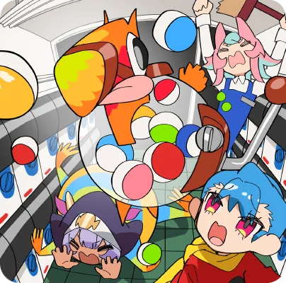
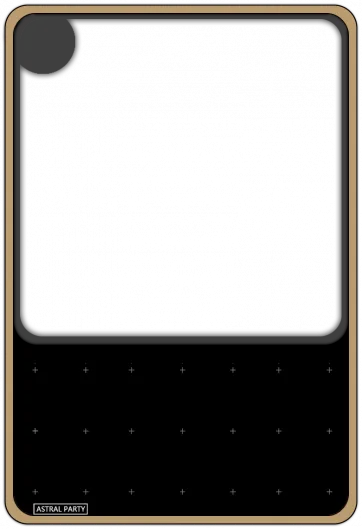

幽魂暗巷
运河区的暗巷一隅堪称神秘之地，汇聚了各类奇特的小商品店，其中魔法用品店尤为知名。每年在此举行的魔物庆典吸引大量热衷‘装神弄鬼’的玩家前来角色扮演，至于是否有真‘鬼怪’混入，无人知晓。这些活动已经成为了运河区的一大特色。
地图事件
全体集结！



 全体集结！
全体集结！
刷新1个科学怪猿，1个圆锯猴助手，所有的怪物防御力+1。
圆月之夜
圆月之夜
圆月之夜
刷新2个科学怪猿，1个圆锯猴助手，所有玩家获得2层【改造】。所有的怪物攻击力+1，防御力+1。
全体集结！
全体集结！
刷新1个科学怪猿，1个圆锯猴助手，所有的怪物防御力+1。
圆月之夜
圆月之夜
圆月之夜
刷新2个科学怪猿，1个圆锯猴助手，所有玩家获得2层【改造】。所有的怪物攻击力+1，防御力+1。


任务 有角色首次获得1颗星星0\1 该玩家获得1张支援口香糖 击败圆锯猴助手0\3 所有玩家获得 强化筹码*1 击倒人工生命体-天崩0\1 所有玩家获得 强化筹码*1 击败科学怪猿0\3 所有玩家获得强化筹码*1,进度-1 击倒人工生命体-噩兆0\1 所有玩家获得 强化筹码*1

舞会开始！ 舞会开始！ 科学怪人登场，舞会开始！ 23

身体检查 身体检查 刷新3个惊喜猴子盒，1个圆锯猴助手。 56
狂躁的皮纳塔 狂躁的皮纳塔 刷新2个糖果皮纳塔，所有怪物攻击力+1。 8
强力帮手
强力帮手 刷新2个惊喜猴子盒，1个科学怪猿，所有的怪物攻击力+1，防御力+1。 101112131415

任务 有角色首次获得1颗星星0\1 该玩家获得1张支援口香糖 击败圆锯猴助手0\3 所有玩家获得 强化筹码*1 击倒人工生命体-天崩0\1 所有玩家获得 强化筹码*1 击败科学怪猿0\3 所有玩家获得强化筹码*1,进度-1 击倒人工生命体-噩兆0\1 所有玩家获得 强化筹码*1 舞会开始！
舞会开始！ 科学怪人登场，舞会开始！ 23 身体检查
身体检查 刷新3个惊喜猴子盒，1个圆锯猴助手。 56 狂躁的皮纳塔
狂躁的皮纳塔 刷新2个糖果皮纳塔，所有怪物攻击力+1。 8 强力帮手
强力帮手 刷新2个惊喜猴子盒，1个科学怪猿，所有的怪物攻击力+1，防御力+1。 101112131415
任务 有角色首次获得1颗星星0\1 该玩家获得1张支援口香糖 击败圆锯猴助手0\3 所有玩家获得 强化筹码*1 击倒人工生命体-天崩0\1 所有玩家获得 强化筹码*1 击败科学怪猿0\3 所有玩家获得强化筹码*1,进度-1 击倒人工生命体-噩兆0\1 所有玩家获得 强化筹码*1 舞会开始！
舞会开始！ 科学怪人登场，舞会开始！ 23 身体检查
身体检查 刷新3个惊喜猴子盒，1个圆锯猴助手。 56 狂躁的皮纳塔
狂躁的皮纳塔 刷新2个糖果皮纳塔，所有怪物攻击力+1。 8 强力帮手
强力帮手 刷新2个惊喜猴子盒，1个科学怪猿，所有的怪物攻击力+1，防御力+1。 101112131415

任务 有角色首次获得1颗星星0\1 该玩家获得1张支援口香糖 击败圆锯猴助手0\3 所有玩家获得 强化筹码*1 击倒人工生命体-天崩0\1 所有玩家获得 强化筹码*1 击败科学怪猿0\3 所有玩家获得强化筹码*1,进度-1 击倒人工生命体-噩兆0\1 所有玩家获得 强化筹码*1 舞会开始！
舞会开始！ 科学怪人登场，舞会开始！ 23 身体检查
身体检查 刷新3个惊喜猴子盒，1个圆锯猴助手。 56 狂躁的皮纳塔
狂躁的皮纳塔 刷新2个糖果皮纳塔，所有怪物攻击力+1。 8 强力帮手
强力帮手 刷新2个惊喜猴子盒，1个科学怪猿，所有的怪物攻击力+1，防御力+1。 101112131415
登场怪物
| 0 0 6 0 0 6 0 0 6 0 0 6 0 0 6 | |
| 0 0 9 0 0 9 0 0 9 0 0 9 | |
| 4 0 8 4 0 9 5 0 10 5 0 11 | |
| 3 1 16 3 1 18 4 1 20 4 2 22 | |
| 4 2 22 4 2 24 5 3 26 5 3 27 | |
| 4 1 26 4 1 28 5 2 30 6 2 33 | |
| 4 2 26 4 2 29 5 3 30 6 3 33 | |
| 5 3 38 6 3 42 7 4 45 7 5 50 | |
| 3 0 8 4 0 9 5 0 9 5 0 10 |
地图专属筹码
计时器 获得【改造】时，额外获得 1 层。每 2 层【改造】，使自身攻击力+1。 重生人偶 被击倒后，进度不变，攻击力、防御力、生命值上限+1。 糖果会员证 怪奇糖果机售价下降为3星币。使用糖果卡牌时，主动技能冷却时间-1。
地图专有卡牌

 支援口香糖
支援口香糖 指定一个角色，恢复2点生命值，并移除【改造】 自身本回合出牌数+1
能量补充棒
能量补充棒 指定一名拥有【改造】的角色，攻击力+2，移动速度+2，持续2回合。随后对目标施加2层【改造】
大聪明软糖
大聪明软糖 指定一名角色获得3张卡牌，并移除【改造】
支援口香糖
支援口香糖 指定一个角色，恢复2点生命值，并移除【改造】 自身本回合出牌数+1
能量补充棒
能量补充棒 指定一名拥有【改造】的角色，攻击力+2，移动速度+2，持续2回合。随后对目标施加2层【改造】
大聪明软糖
大聪明软糖 指定一名角色获得3张卡牌，并移除【改造】


地图特殊效果/状态
丨 深度改造 丨 无法被攻击或选中，受到伤害降低为0。 丨 改造 丨 层数归零时，受到当前生命值的伤害。
2025年09月28日
雅央这次搞出了一些稀奇古怪的发明，本来好好的派对被搅和的天翻地覆，不可原谅，必须阻止她！诶？可是她飞在空中诶...先解决她的发明吧！ █ 新增 ◆ 地图【幽魂暗巷】 ◆ 怪物 [ 科学怪人 ]、[ 人工生命体-天崩 ]、[ 人工生命体-噩兆 ]、[ 人工生命体-混乱 ]、[ 惊喜猴子盒 ]、[ 圆锯猴助手 ]、[ 科学怪猿 ] ◆ 地块 [ 怪奇糖果机 ] ◆ 卡牌 [ 支援口香糖 ]、[ 能量补充棒 ]、[ 大聪明软糖 ] █ 关键机制 ◆ 角色们会被怪物施加“改造”状态，如果一段时间内没有解除，会有很可怕的后果！不过不用担心，找怪奇糖果机购买神奇的糖果来应对吧！
2025年10月31日
█ 新增 ◆ 筹码 [ 计时器 ]、[ 重生人偶 ]、[ 糖果会员证 ] ◆ 事件 [ 失控的糖果皮纳塔 ] ◆ 怪物 [ 糖果皮纳塔 ] ◆ 通用事件 [ 取长补短 ] ◆ 通用筹码 [ 优雅之羽 ]、[ 探天卫星 ] █ 数值变动 ◆ 调整了通用筹码 [ 会员推荐信 ] 稀有度，由紫色调整为蓝色，并修改描述由“轮次奖励卡牌数量 +2”，调整为“轮次奖励卡牌数量 +1”。
2025年11月21日
█ 数值变动
◆ 怪物 [ 圆锯猴助手 ] 普通模式下
 3
3 1
1 15 调整为
3116↑ 、困难模式下
3116 调整为
3118↑ 。
◆ 怪物 [ 人工生命体-天崩 ] 普通模式下
4125 调整为
4126↑ 。
◆ 怪物 [ 人工生命体-噩兆 ] 普通模式下
4225 调整为
4226↑ 、困难模式下
4228 调整为
4229↑ 。
◆ 怪物 [ 人工生命体-混乱 ] 普通模式下
5336 调整为
5338↑ 、困难模式下
6336 调整为
6342↑ 。
15 调整为
3116↑ 、困难模式下
3116 调整为
3118↑ 。
◆ 怪物 [ 人工生命体-天崩 ] 普通模式下
4125 调整为
4126↑ 。
◆ 怪物 [ 人工生命体-噩兆 ] 普通模式下
4225 调整为
4226↑ 、困难模式下
4228 调整为
4229↑ 。
◆ 怪物 [ 人工生命体-混乱 ] 普通模式下
5336 调整为
5338↑ 、困难模式下
6336 调整为
6342↑ 。